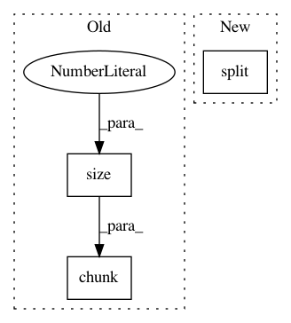

62555a6f72e014341a1d85fccba799e7f35b4d63,OpenNMT/train.py,,memoryEfficientLoss,#Any#Any#Any#Any#Any#,124
Before Change
outputs_rewrapped = Variable(outputs.data, requires_grad=(not eval), volatile=eval)
batch_size = outputs.size(1)
chunks = int(math.ceil(targets.size(0) / opt.max_generator_batches))
outputs_chunked = torch.chunk(outputs_rewrapped, chunks)
targets_chunked = torch.chunk(targets, chunks)
for out_t, targ_t in zip(outputs_chunked, targets_chunked):
out_t = out_t.view(-1, out_t.size(2))
pred_t = generator(out_t)
After Change
outputs= Variable(outputs.data, requires_grad=(not eval), volatile=eval)
batch_size = outputs.size(1)
outputs_split = torch.split(outputs, opt.max_generator_batches)
targets_split = torch.split(targets, opt.max_generator_batches)
for out_t, targ_t in zip(outputs_split, targets_split):
out_t = out_t.view(-1, out_t.size(2))
pred_t = generator(out_t)
In pattern: SUPERPATTERN
Frequency: 4
Non-data size: 3
Instances
Project Name: OpenNMT/OpenNMT-py
Commit Name: 62555a6f72e014341a1d85fccba799e7f35b4d63
Time: 2017-01-11
Author: alerer@fb.com
File Name: OpenNMT/train.py
Class Name:
Method Name: memoryEfficientLoss
Project Name: pytorch/examples
Commit Name: 4d137ed0516d93b6770912452c51e7db32dff74e
Time: 2017-03-14
Author: bryan.mccann.is@gmail.com
File Name: OpenNMT/onmt/Models.py
Class Name: Decoder
Method Name: forward
Project Name: OpenNMT/OpenNMT-py
Commit Name: e93074d9e0d9e26119872da69fc663dd3a7779f3
Time: 2017-03-14
Author: bryan.mccann.is@gmail.com
File Name: onmt/Models.py
Class Name: Decoder
Method Name: forward